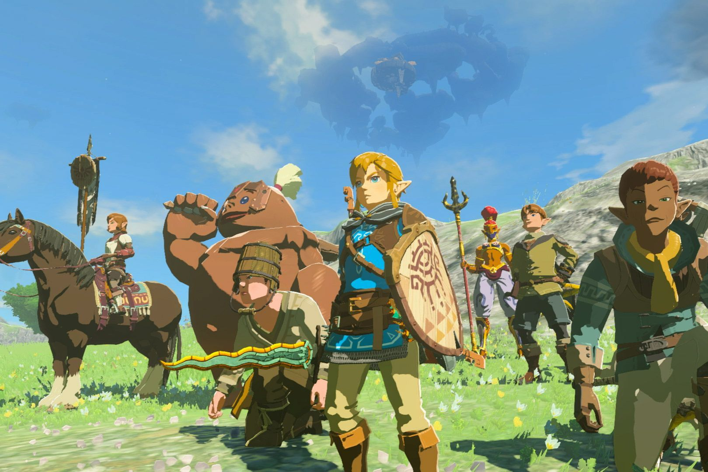

The Legend of Zelda: Tears of the Kingdom
Link explora o reino de Hyrule na terra, no céu e no subterrâneo. O destaque está nos poderes de construção, que permitem montar veículos e engenhocas para resolver puzzles e enfrentar inimigos da maneira que o jogador preferir.